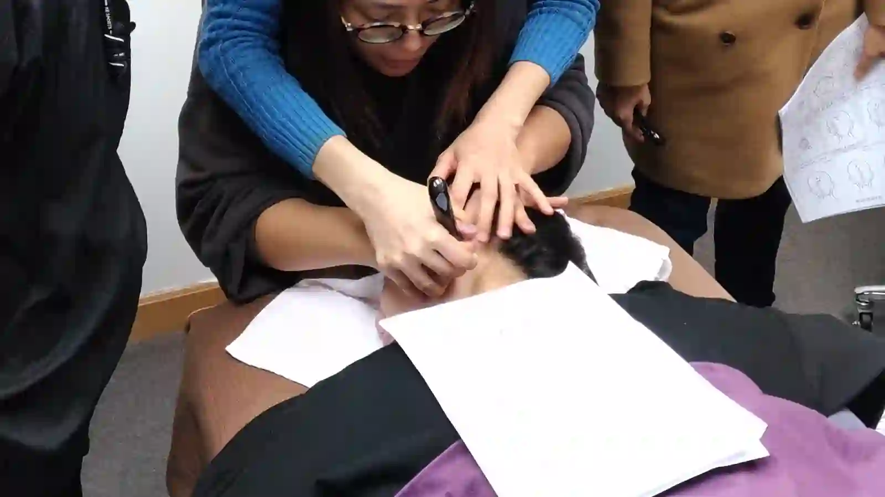

The Bojin Journal · Rituals & routines
Doing Bojin on Someone Else: What Changes

Sooner or later someone asks you. Your sister sees you doing it and puts her face in front of you. Your mother says her jaw has been aching. Your husband, who has never once asked about skincare, mentions that his forehead feels tight.
It's a lovely thing to be asked. It's also genuinely different from working on your own face, in ways that surprise people the first time, and a few of those differences are worth knowing before you start.
Why your own face is the easier one
When you work on yourself, you have information nobody else gets. You feel the pressure from both sides at once, from the hand holding the tool and from the skin receiving it. You know instantly when something is too much, and your hand adjusts before you've consciously decided to.
Working on someone else, that loop is gone. You have the hand but not the skin, so you're guessing at the one thing the method depends on most. This is why almost everyone presses too hard the first time they work on another person, without meaning to at all.
There's a second difference: the angles are all wrong to begin with. Every stroke you've learned, you learned pointing at yourself in a mirror. Reaching across to someone else's face reverses everything, and your hands will feel clumsy for the first few minutes even though you know exactly what you're doing.
How to bring the method across
The method itself doesn't change: order, angle, position, comfortable pressure, and finishing down the neck. What changes is how you find the right pressure, since you can no longer feel it yourself.
You can't feel their skin, so they have to tell you. Agree on a signal before you start, and start lighter than you think you need.

The answer is that they tell you. Before you start, agree that they'll say "lighter" the moment anything is more than comfortable, and that you'd genuinely rather hear it than not. Then start lighter than you think you need to and let them bring you up. That single agreement does more for safety than any amount of technique.
Position helps more than people expect. Have them lie down or sit with their head supported, and sit where you can reach both sides without leaning across them. If you're straining, your pressure control goes first.
A stainless steel bojin stick works well for this because its weight rests into the skin, so you can guide rather than push. That's a real advantage when you can't feel what you're doing.
The 5 steps for working on someone else

Agree on the signal first.
They say "lighter" or "stop" and you stop immediately, no discussion. Ask about recent procedures, skin conditions, or sore spots before you touch anything.
Set up so you're comfortable.
Their head supported, you seated, both sides reachable without stretching.
Warm generously with plenty of slip.
More oil than you'd use on yourself, and longer warming, because you can't feel when the skin is ready.
Start lighter than feels useful.
Ask "how's that?" early and often. Let them raise you rather than easing yourself down.
Finish down the neck, both sides, and stop before they want you to.
Ending while it's still lovely is better than ending because they've had enough.
Honest expectations, and a safety note
You're offering somebody a pleasant, gentle, temporary easing of tension, the same as your own routine offers you. You are not treating anything, and it's worth being clear about that with the person in the chair too, especially if they're hoping it will help with pain.
Being asked to do this for someone is a small kind of trust. Take it slowly, keep it lighter than you think, and let them tell you when it's right.
Quick answers
Why do I press too hard when working on someone else?
On your own face you feel the pressure from both sides at once. On someone else that feedback is gone, so almost everyone starts too firm without meaning to.
How do I find the right pressure on another person?
They tell you. Agree they'll say "lighter" the moment anything is more than comfortable, start lighter than you think you need, and let them bring you up.
Does the method change when working on someone else?
No. Order, angle, position, comfortable pressure, and the neck finish are the same. What changes is how you judge pressure and the reversed angles.
Who should I not work on?
Anyone with broken or irritated skin, an infection, recent facial surgery or injectables, unexplained swelling or lumps, or unexplained facial pain, and anyone who can't tell you to stop.
Want to see the reversed angles in practice?
My free 3-minute video shows the full sequence, so you have a clear picture to translate onto someone else's face.
Watch the free 3-min videoYu-Ting Lan is a Taiwan-based international bojin instructor and the founder of Héhé Studio. She has taught her bojin method to more than a thousand students, from complete beginners to grandmothers, across Taiwan, Hong Kong, and Malaysia.